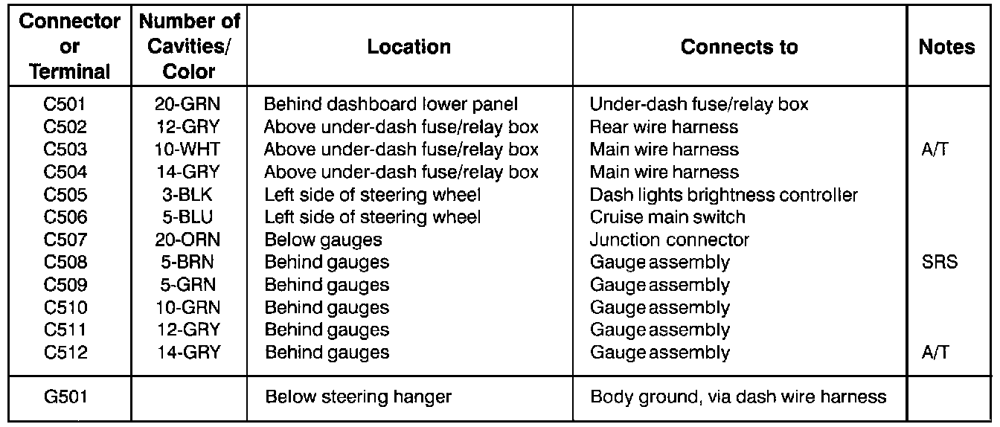

Component Locations

To see where a component or connector is located on the car, look up its photo number in the Component Location section. The photo will also tell you the color of the connector, and how many cavities it has.
Component Locations:

If there is no photo number below or beside a connector, ground, or terminal number, look up that connector, ground, or terminal number in the appropriate Connector Identification Chart. The chart will tell you the color of a connector, how many cavities it has, where it's located, and what component or harness it connects to. Along with this chart you'll find an image giving illustration of the related harness.